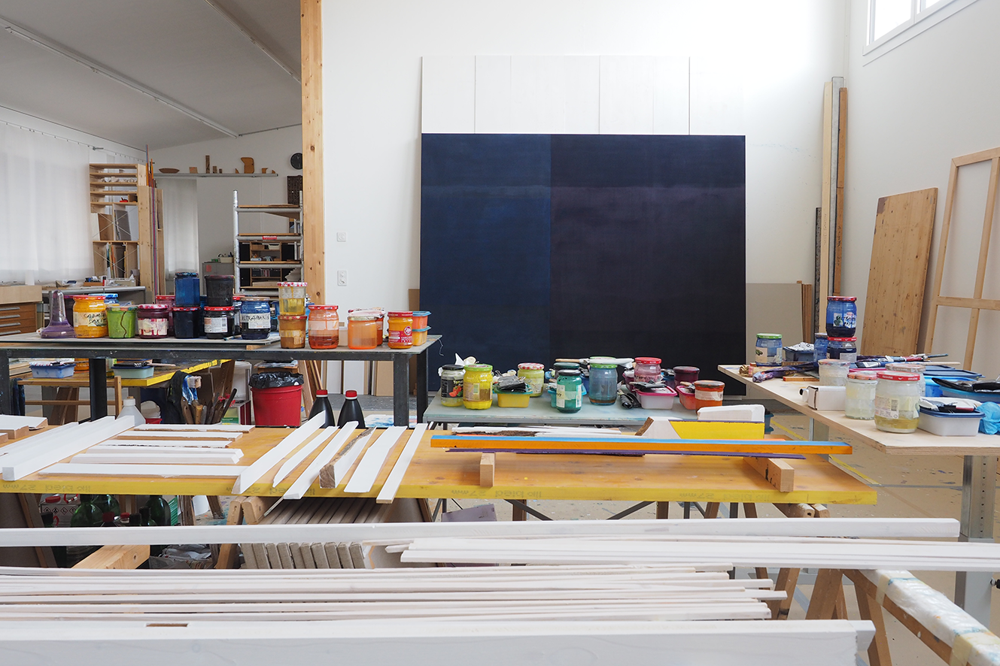

1990-95 Ausbildung zum Zeichenlehrer an der Kunsthochschule Luzern
Beginn der regelmässigen Arbeit im eigenen Atelier
Ab 1995 Arbeit als Lehrer für Kunst an der Kantonsschule Schüpfheim/Gymnasium Plus
Aufbau und Führung der Talentförderung im Bereich Visuelle Gestaltung am Gymnasium Plus
Ab 2011 Dozent an der Hochschule für Design und Kunst in Luzern
